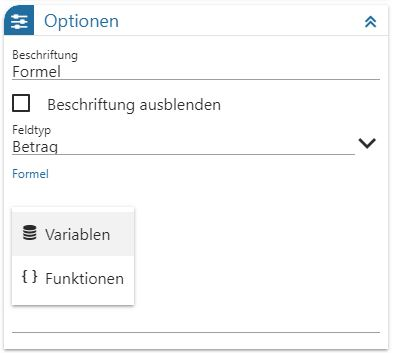
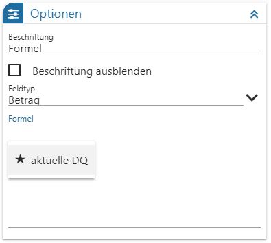
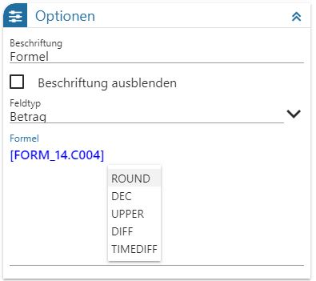

Mit der Formel können Rechenoperationen im FORM durchgeführt werden, wobei auf Felder aus dem FORM zugegriffen werden kann.
Die Einstellungen (Formel) sind neben Button "KOPIEREN" und "LÖSCHEN" in die Bereiche "Optionen", "MesoAI", "FORM-Gestaltung" und "FORM-Datenfeld" aufgeteilt.
Ø Beschriftung
Hier kann die Bezeichnung der Formel eingetragen werden. Vorgeschlagen wird der Spaltenname des Feldes, das dafür in der Datenquelle angelegt wird (z.B. C004).
Ø Beschriftung ausblenden
Ist die Checkbox aktiviert, so wird die Beschriftung im Element nicht dargestellt
Ø Feldtyp
Aus der Auswahllistbox kann ausgewählt werden, in welcher Form das Ergebnis der Formel angezeigt werden soll. Dabei stehen folgende Auswahlen zur Verfügung:
ü Text
Das Ergebnis der Formel
wird linksbündig als Text angezeigt.
ü Betrag
Das Ergebnis der Formel
wird rechtsbündig als Betrag angezeigt.
Ø Formel
Wird ein Punkt eingegeben, so kann entschieden werden, ob "Variablen" oder "Funktionen" für die Ausweisung / Berechnung benötigt werden.
Variablen
Es stehen alle in der Datenquelle dieser FORM befindlichen Elemente für die Befüllung der Formel zur Verfügung.


Funktionen
Folgende Rechenfunktionen stehen zur Verfügung:
ü ROUND: Funktion rundet Zahlen auf den nächsten Ganzzahl- oder Dezimalwert auf
ü DEC: wandelt den Wert in eine Dezimalzahl mit Angabe der Nachkommastellen
ü UPPER: Alphabetische Zeichen werden in Großbuchstaben umgewandelt
ü DIFF: Differenz zwischen den Werten ermitteln
ü TIMEDIFF: Differenz zwischen zwei Datums- oder Zeitkomponenten

ü + Addition
ü - Subtraktion
ü * Multiplikation
ü / Division
ü ( linke Klammer
ü ) rechte Klammer
MesoAI
Ø MesoAI Frage
In diesem Feld kann eine Fragestellung für die Verwendung der MesoAI hinterlegt werden. Diese hinterlegte Frage wird mittels MesoAI analysiert und das Ergebnis in dieses Feld abgestellt, wenn der Button "MesoAI" im "FORM DataCenter" angewählt wird.
FORM-Gestaltung
Ø Info/Frage
Hier kann ein weiterführender Text / eine Info erfasst werden, was im Formular in Form einer Überschrift ausgewiesen wird.
Ø Beschreibung
Erläuterung zum Thema, welche im Formular unter Info/Frage dargestellt ist.
Ø Bild Url
Über die Lupe kann ein Bild (entweder aus der WinLine oder aus dem Explorer) eingefügt werden. Es gibt über dieses Icon auch die Möglichkeit, dass Bild zu löschen.
Ø Bildbreite
Hier kann die gewünschte Bildbreite eingetragen werden
Ø Bildhöhe
Hier kann die benötigte Bildhöhe angegeben werden.
Ø Bildposition
Es kann eingestellt werden an welcher Position (links, rechts, zentriert und max. Breite stehen zur Verfügung) das Bild dargestellt werden soll.
FORM-Datenfeld:
Ø View
Ausweisung des Namens der Datenquelle in der BI-Datenbank, in der die Daten in weiterer Folge gespeichert werden.
Ø Var
Spalte in der Datenquelle in der BI-Datenbank